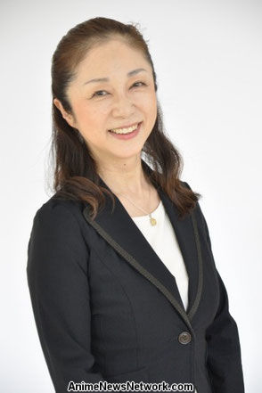

Yukari Nozawa is a Japanese voice actress and actress. She is affiliated with Seinenza Theater. She voiced Morella in Gosick and Baroness Bailaha in Scrapped Princess.
- Gender: Female
- Birthday: October 9, 1957
- Hometown: Niigata, Japan

| |
Yukari Nozawa is a Japanese voice actress and actress. She is affiliated with Seinenza Theater. She voiced Morella in Gosick and Baroness Bailaha in Scrapped Princess.
|
 |
|---|
 |
Baroness Bailaha | Scrapped Princess | Baroness Bailaha is the baroness of the Kingdom of Leinwan. |
Go Back to Main Page |
Go Back to Homepage |
|
|
|
OR |
|